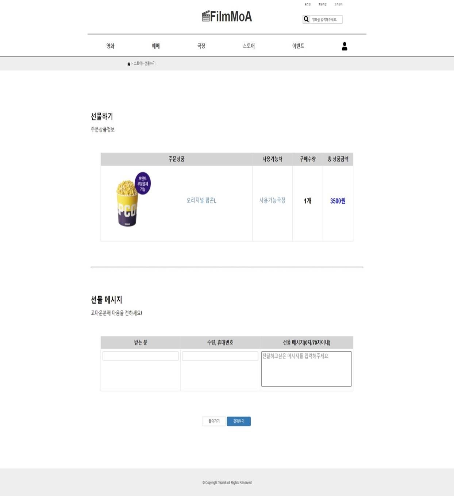

#1. 프로젝트 정보
| 프로젝트명 |
Servlet / JSP Project :
FilmMoa - 영화 예매 사이트
|
| 프로젝트 진행기간 |
2021. 07. 12 ~ 2021. 08. 06 |
| 프로젝트 개요 |
웹 기반 영화 정보, 영화 예매, 매점, 이벤트 등
다양한
기능을 제공하는 프로그램
|
| 프로젝트 목적 |
1. 사용자에게 정보(영화, 극장, 매점, 이벤트 등)
제공
2. 사용자에게 영화 예매 및 상품 구매 기능 제공
|
| 참여인원 |
5명 |
| 담당업무 |
영화관 매점 관리 페이지:
1. 관리자: 매점상품 추가, 매점상품 삭제, 매점 상품
수정 등 관리
2. 회원 : 매점상품 목록 불러오기,
페이징 구현, 매점 상품 상세페이지 보기, 매점 상품
구매하기, 매점 상품 구매하기, 매점 상품 선물하기,
|
#2. 사용 기술
| 개발환경 |
Windows10 |
| 개발 툴 |
Eclipse, SQL Developer, visual Studio Code |
| 사용 기술 |
Java, SQL, HTML, CSS, JavaScript, jQuery, BootStrap,
Servlet/JSP, JSTL
|
#3. 구현화면
1. ERD : 전체적인 DB 구조입니다.
| 프로젝트의 중심이 되는 영화 테이블과 회원 테이블을
기준으로 분류하여 진행하였습니다.
👉ERD 이미지 다운로드
2. 회원 - 스토어 메인
| 회원은 상단의 스토어 버튼을 클릭하여 해당 화면에 접근할
수 있으며,
스토어 메인에서는 FilmMoa에서 판매하는
스낵들을 분류별로 확인할 수 있습니다.
2-1. 회원 - 스토어 리스트
| 팝콘, 음료, 티켓, 세트의 총 4개로 스토어 상품을 분류하여
각 분류별 상세페이지를 구현하였습니다.
아래 사진은
팝콘의 리스트입니다.
하단에는 페이징 처리를 했는데, 페이지 레이아웃에 맞춰 9개의
제품이 보여지게끔 구현했습니다.
2-2. 회원 - 스토어 뷰
| 상품에 대해 자세히 설명해 놓은 페이지입니다.
제품명, 사용가능한 극장, 사용기간, 금액 등을 안내해
놓았습니다.
3. 회원 - 스토어 선물하기
| 원하는 제품을 친구, 가족, 연인에게 선물할 수 있는 페이지
입니다.
스토어 뷰 페이지에서 선물하기 버튼을 클릭해
접근이 가능하며,
하단에 선물 메시지를 전달할 수
있습니다.

4. 관리자 - 제품 등록하기
| 관리자가 스토어 제품을 등록할 수 있는 페이지 입니다.
제품 분류, 제품 명, 가격, 제품 수량, 제품 대표 이미지를
입력해야합니다.
5. 관리자 - 제품 수정하기
| 관리자가 스토어 제품을 수정할 수 있는 페이지 입니다.
제품 분류, 제품 명, 가격, 제품 수량, 제품 대표 이미지를
모두 수정해야 수정이 가능하도록 구현하였습니다.
#4. 후기
1. 기획 과정
Servlet / JSP 프로젝트는 영화 예매 사이트를
구현하였습니다. 처음 웹페이지를 작성하는 프로젝트였기
때문에 팀원끼리 주제를 정하는데에 시간을 많이
할애했고 화면이 많고 일상생활에서 접할 수 있는 영화
예매 사이트 구현을 진행하게 되었습니다.
2. 구현 과정
요구사항 분석서를 기반으로 팀원들과 exERD 모델링
도구를 활용하여 테이블과 컬럼, 그리고 테이블간의
관계를 작성했습니다. 테이블 작성이 끝난 후, 주요
테이블을 기준으로 나누어 DML을 생성하였습니다.
DB 작업이 끝난 후, 카카오 오븐 프로토타입 툴을
이용하여 화면설계서를 작성했습니다.
먼저 header와 footer 같이 공통적으로 들어가야 하는
부분은 <% include> 디렉티브 코드를 이용해서
header.jsp , footer.jsp 파일을 작성하여 각자의
jsp파일에 구현하였습니다. 또한 영화 웹사이트 구현 상,
이미지를 불러와야 하는 작업이 많았는데 처음 웹
페이지를 구현하다 보니 DB에 이미지명을 저장할 컬럼이
있어야 함을 늦게 깨닫게 되어 구현 도중 DB를
수정해야하는 번거로운 일이 생겼습니다.
3. 팀 협업
기존에 Java Console 프로젝트와 Oracle DB프로젝트를
함께 했던 팀원들과 진행했던 프로젝트였기 때문에,
의사소통이나 일정관련하여 문제가 없어서 편했습니다.
또한 제가 수업 수강중 이해하지 못했던 부분이 있었는데
서로 묻고 답하고 해결하는 과정에서 진행 패턴에 대해서
이해할 수 있었습니다.
4. 느낀점
처음으로 웹 사이트를 구현해 보니까 한 장의 웹사이트를
구현하는데도 굉장히 손이 많이 간다는 점을 깨닫게
되었습니다. 또, 데이터를 주고 받음을 처리하는 과정이
처음에 이해가 어려워 구현하는데에 애를 많이
먹었었는데, 구조를 조금 이해하고 나니 어떤 식으로
데이터를 받아오고 어떤식으로 데이터를 구현해야 하는지
생각했던 점이 재밌었던 것 같습니다. 이번에는 특히, 제
손으로 자주 가는 사이트를 구현한다는 점에서 즐겁게
작업했습니다.